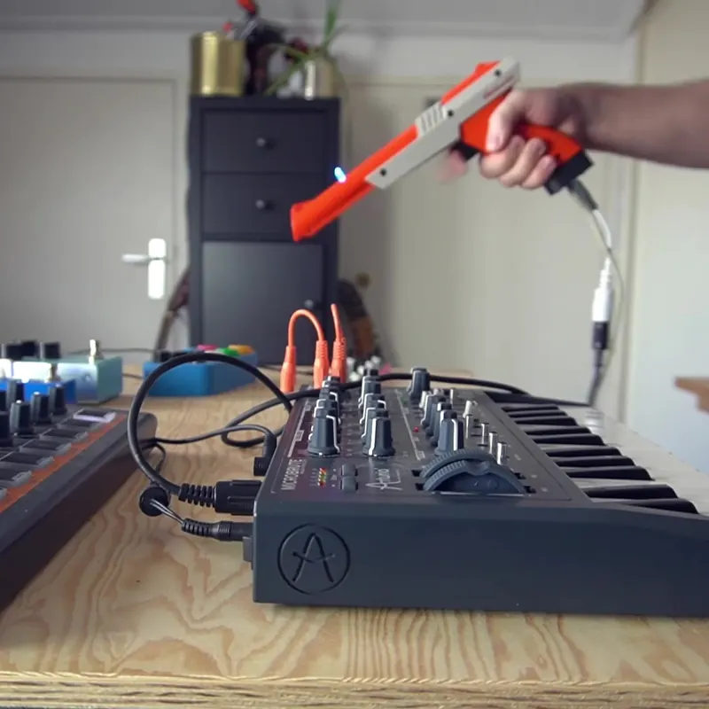
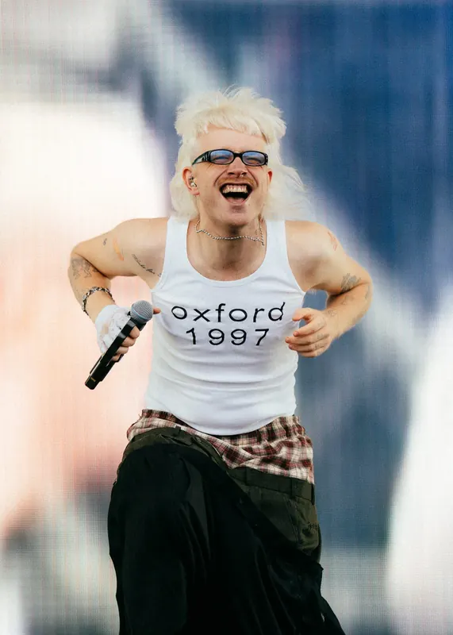
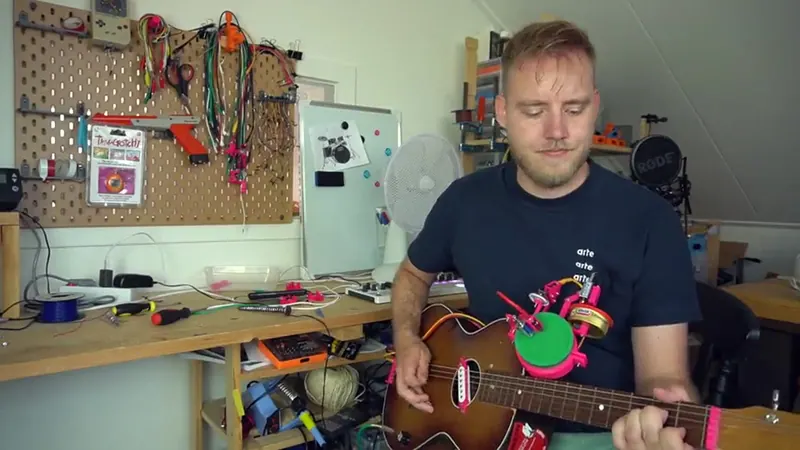
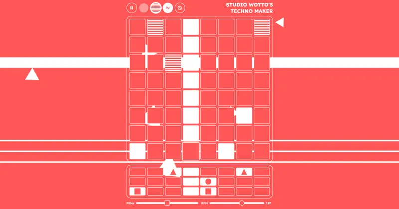
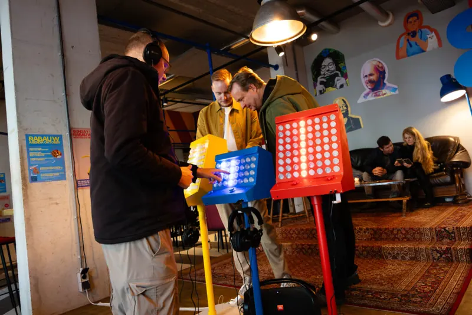

Een Nintendo Zapper als muziekinstrument
Dit heeft pappa nog geprogrammeerd zonder de hulp van AI. In 2020 bouwde ik een Nintendo Zapper om tot muziekinstrument.
Onderwerp
Instrumenten die nog niet bestonden. Zelf gebouwd, met een eigen bediening en een eigen geluid, voor wie iets wil spelen dat niemand anders heeft.

Dit heeft pappa nog geprogrammeerd zonder de hulp van AI. In 2020 bouwde ik een Nintendo Zapper om tot muziekinstrument.


Een gitaar die ik niet alleen versterkte maar ook liet drummen. Achteraf het kantelpunt van muziek maken naar bouwen.


Met de SideQuest Rave op het Nerdland Festival: samen muziek maken, ongeacht je muzikale achtergrond.

Get in touch
Zoiets voor jouw plek? Bel of mail gerust, we denken graag mee.